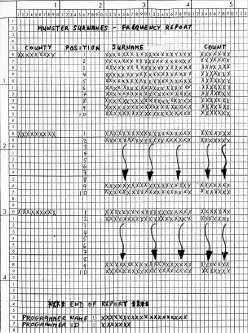

Introduction
The Genealogists Society of Ireland is trying to discover which Irish surnames occur most frequently in the counties of Munster. In order to obtain this information they have persuaded the government to make available to them some of the information from the most recent census. Unfortunately, since there is no fee involved, the government can only make available a standard file covering the entire 26 counties.
Census Population File
Comma delimited or comma separated values (CSV), is a file format widely used in the computing industry. It allows data to be transferred between applications with incompatible file formats (Excel, for example, can save its spreadsheets in this form). CSV files consist of free format, variable length records where the fields are separated by commas and do not occupy specific areas. Before the records in a CSV format file can be processed they must be unpacked into individual fields .
The Census Population File provided by the government has a CSV-like format. Each record contains a census number, a surname and a county name. The fields are separated from one another by commas. The file is unsorted.
For your guidance;
· the census number is 7 digits in size
· the surname is a maximum of 20 characters in size
· the county name is a maximum of 9 characters in size.
Processing
You will need to sort the file on ascending Surname within ascending County name. Use an Input Procedure to unpack the records and get rid of any non-Munster records. Use a table to find the top ten surnames in each county.
The Surnames Report
Numeric values must be printed using zero suppression and comma insertion. Change page after line 39 unless the End of Report line is the next line to be printed.
See the print specification below for more report format details.
| Line 2-5 | Page Heading. To be printed at the top of each page. |
| Line 6-15 | Surname lines. The County name is printed only on the first line. Count is the count of the number of households in the county with this surname. The surname with the highest count occupies position 1, the next highest position 2 and so on. |
| Line 44 | Printed at the end of the report only. |
| Line 46-47 | Printed at the end of the report only. The programmer name is the name of the person who wrote the program. The programmer id is the Student Id of the person who wrote the program. |

Click for the full size version
{kind=link}